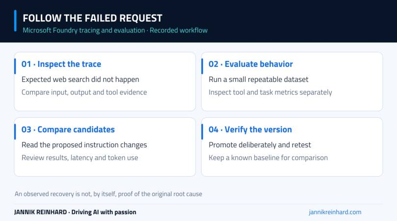
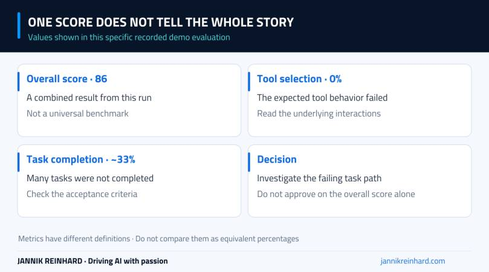

Microsoft Foundry tracing and evaluation become much more useful when something goes wrong. In this episode, my agent has a web-search tool configured, but the first requests do not use it. That gives us a real debugging case instead of a perfectly rehearsed answer.
I inspect the trace, run an evaluation, compare optimization candidates and then look at the telemetry in Application Insights. The important lesson is that an attractive overall score can still hide failure in the part of the task that matters most.
Video language: German · Duration: 20:04. Video originally published 26 August 2026; this written companion was added on 22 September 2026.
Start with the request that did not work
The demonstration uses an incident-investigation agent with tools configured in Foundry. When I ask it to look for current information, it does not perform the expected web search. I open the trace rather than immediately adding stronger wording to the instructions.
At approximately 2:27, the trace shows the request, response and associated metadata. I can inspect the instructions and input, then look for evidence of a tool call. In the problematic interaction, that evidence is missing.
I record negative feedback with a short reason: the tools were not used. That is more actionable than simply marking the answer as bad. It states which expected behavior was absent and gives the next investigation a concrete starting point.

The investigation loop demonstrated in the episode. A successful optimization run is only one step in it.
Keep configuration and runtime evidence separate
The tool appears in the agent configuration. That alone does not prove that it reached a particular model request or was selected during that run. Later in the episode, I compare raw telemetry and find tool-definition differences between requests.
After removing and re-adding the web-search tool, a subsequent request works. That is an observation, not a proven root cause. The recording does not establish whether the earlier behavior came from an unsaved state, version mismatch, a portal issue or something else.
This is an important limit to keep in the written notes. “It worked after I changed this” is useful evidence, but it is not enough to label the product bug or turn that action into a universal fix.
In your own investigation, capture the agent version, request time and relevant trace before making changes. Otherwise a working retry can erase the context needed to understand the original failure.
Evaluate the behavior you actually need
Around 5:22, I move into evaluation. The demonstrated workflow includes connecting Application Insights and checking the required identity access. I then create a one-time evaluation using a small synthetic dataset of 15 prompts.
The selected criteria cover response quality, safety and agent behavior, including tool selection. The dataset is deliberately small for the demonstration. It is not a representative benchmark of the model or a production acceptance test.
The run takes time. Some traces become visible before the entire evaluation is complete, so I inspect progress without treating partial results as the final verdict. One analysis attempt fails while the run is still in progress; the episode does not establish that timing was its definitive cause.
For current prerequisites and supported evaluation options, use Microsoft’s agent evaluation guidance. The exact portal experience and available evaluation modes can differ as features roll out.
An overall score of 86 is not the whole result
At approximately 8:49, the completed demonstration shows an overall score of 86, while tool selection is 0% and task completion is about 33%. Those are results from this one demo run, not general performance numbers for Microsoft Foundry or the underlying model.
That contrast is the most useful moment in the video. The agent can produce fluent, apparently reasonable text while failing the workflow it was meant to complete. If the task needs current information, not calling the search tool is a material failure even when other criteria score well.
I would therefore define acceptance criteria before running the test. For a retrieval task, a supported answer and correct source use matter. For an action-taking task, the correct tool, arguments and resulting state matter. The combined score helps summarize results; it should not replace those checks.

Values from the recorded demo only. Different metrics describe different aspects of the run and must not be treated as interchangeable percentages.
At roughly 11:23, I explore optimization. The originally selected model does not support that workflow in the shown configuration, so I move to a supported option and review the evaluation setup and estimated cost.
The run creates a baseline and candidate instruction changes. I inspect the differences rather than assuming a longer prompt is automatically better. The portal shows candidate results and lets me examine the underlying evaluation evidence before promoting a candidate to a new agent version.
Promotion is a configuration change, not proof that every real-world case improved. My next step would be to rerun a separate set of held-out questions, including cases the optimization process did not use. I would also check response time and token use so a quality improvement is understood alongside its operational cost.
Keep the previous version available. If a candidate improves one task but breaks another, a known baseline makes the comparison and rollback much easier to explain.
Follow the trace into Application Insights
From approximately 17:07, I move into the connected Application Insights resource. The video reviews agent runs, model usage, timing and raw log content. Telemetry can arrive with a delay, so the immediately visible count is not necessarily the final count for a just-completed run.
The raw records are helpful when the high-level portal view leaves questions unanswered. They also deserve access and retention controls: prompts, responses and tool definitions can contain information you do not want every dashboard reader to see.
Microsoft’s tracing setup documentation covers current instrumentation options. For the broader operating model, see my Foundry observability article. My agent evaluations guide goes deeper into evaluation design.
The takeaway from this recording is straightforward: start with one failed interaction, follow the evidence, and judge improvements against the task you actually need completed. A high score is useful only when you know what it measures.
Stay healthy, Cheers Jannik